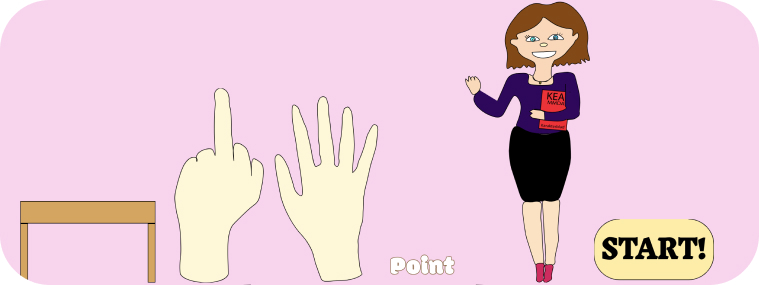

Grundlæggende animation
idegenereing, stil analyse og adobe illustrator
I tema 4 arbejdede vi med idégenerering og stilanalyse. Til idégenerering valgte jeg et verbum, et sted og en ting: "hoppe", "på en skole" og "en blyant". Disse elementer brugte jeg til at udvikle min spilidé. For stilen valgte jeg Kawaii 3 og 4, da jeg mente, at de rundede, rummelige og søde figurer passede bedst til børn. Vi lærte også at bruge Adobe Illustrator, hvor vi importerede vores tegninger af figurer og skærme og lærte at tegne dem digitalt. Det var udfordrende i starten, men blev lettere med tiden. Herunder kan man se de illustrationer, jeg har lavet i Adobe Illustrator, som indgår i mit spil
Forskellige diagrammer
Aktivitetsdiagram Et aktivitetsdiagram viser det overordnede flow af handlinger og beslutninger i et program. Det beskriver aktivitet og består af detaljerede handlinger og beslutninger. Det viser også trin for trin når man spiller og hvordan man vinder/taber.
State Machine Diagram Det viser de forskellige tilstande et system kan have og hvordan det skifter mellem dem baseret på hændelser. Det giver et detaljeret overblik over systemets adfærd.
Anvendelse i Visual Studio Code I Visual Studio Code kan du bruge plugins til at skabe og visualisere aktivitets- og state machine diagrammer, hvilket hjælper med planlægning og dokumentation af koden.
javascript
I et tidligere tema lærte vi kort om JavaScript, men i dette tema var det vores hovedfokus. JavaScript gør hjemmesider levende og interaktive. Det kan ændre CSS og HTML og bruges til mange ting, som at reagere på brugerens handlinger, tjekke formularer og lave animationer. Vi brugte JavaScript til at skabe en levende animation, altså et helt videospil.
Eventlisteners
window.addEventListener("load", start);: Starter spillet, når vinduet er loadet.
document.querySelector("#til_info"). addEventListener("click", info);: Skifter til informationsskærmen, når der klikkes på informationsknappen.
document.querySelector("#play"). addEventListener("click", startGame);: Starter spillet, når der klikkes på play-knappen.
Funktioner
De vigtigeste funktioner jeg har i mit spil;
start(): Viser startskærmen og sætter event listeners op.
info(): Viser informationsskærmen.
startGame(): Initialiserer spillet ved at nulstille point og liv, samt starte animationerne.
clickHaand() og clickFinger(): Håndterer klik på de forskellige objekter, opdaterer point og liv, og stopper animationer.
resetHaand() og resetFinger(): Nulstiller animationer og positioner for de forskellige objekter.
endGame(): Stopper spillet og viser enten game over eller level complete skærmen afhængig af point og liv.
gameOver() og levelComplete(): Viser henholdsvis game over og level complete skærmen og sætter event listeners for at spille igen.
Hjælpefunktioner
generateRandomNumber(antal): Genererer et tilfældigt tal mellem 1 og antal.
hideAllScreens(): Skjuler alle skærme ved at tilføje klassen "hide".
Forkorte Js
Brug af Hjælpefunktioner: Funktionen generateRandomNumber(antal) bruges flere gange for at undgå gentagelse af kode, der genererer tilfældige tal. Dette gør koden kortere og mere overskuelig.
CSS Klasser: Ved at tilføje og fjerne CSS klasser som fald, forsvind, frys, osv., styres animationer og ændringer af elementernes udseende effektivt